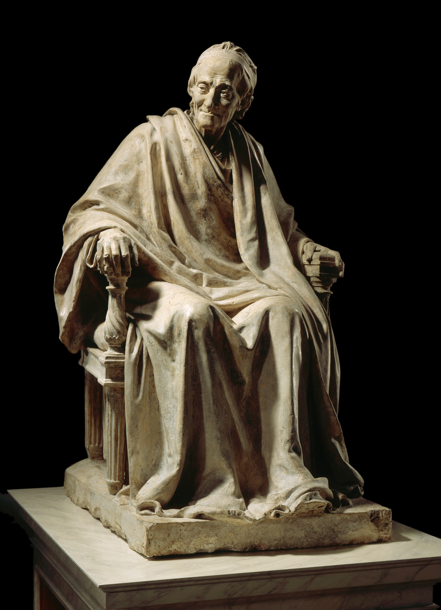
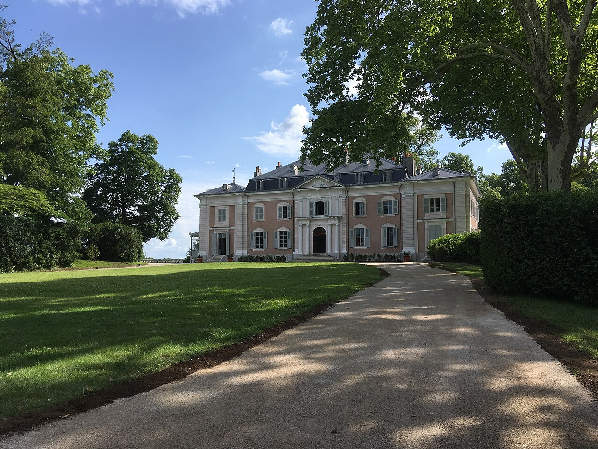
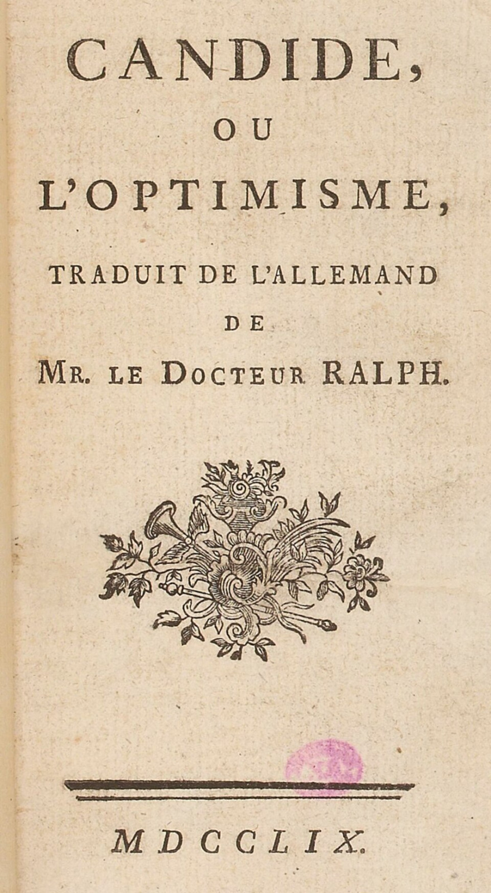
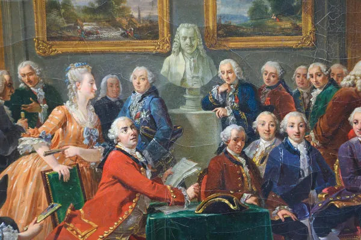

Voltaire
Retrato clássico do filósofo iluminista francês, uma das figuras mais influentes do século XVIII.

Estátua de Voltaire
Escultura que retrata Voltaire já idoso, simbolizando sua importância para a filosofia e a literatura.

Maison de Voltaire
A casa em Ferney, onde Voltaire viveu seus últimos anos, hoje preservada como museu.

Cândido, ou o Otimismo
Obra mais conhecida de Voltaire, publicada em 1759, uma crítica irônica ao otimismo filosófico da época.

Voltaire e o Iluminismo
Voltaire participava de debates e reuniões com outros pensadores iluministas, defendendo ideias de liberdade e razão.
Vida e Pensamento de Voltaire
Uma breve introdução à vida e às ideias de Voltaire, narrada por um especialista em filosofia iluminista.
Documentário sobre Voltaire
Um documentário que explora a vida, as obras e o impacto de Voltaire no Iluminismo e na sociedade moderna.
Documentário sobre Voltaire
Um documentário que explora a vida, as obras e o impacto de Voltaire no Iluminismo e na sociedade moderna.